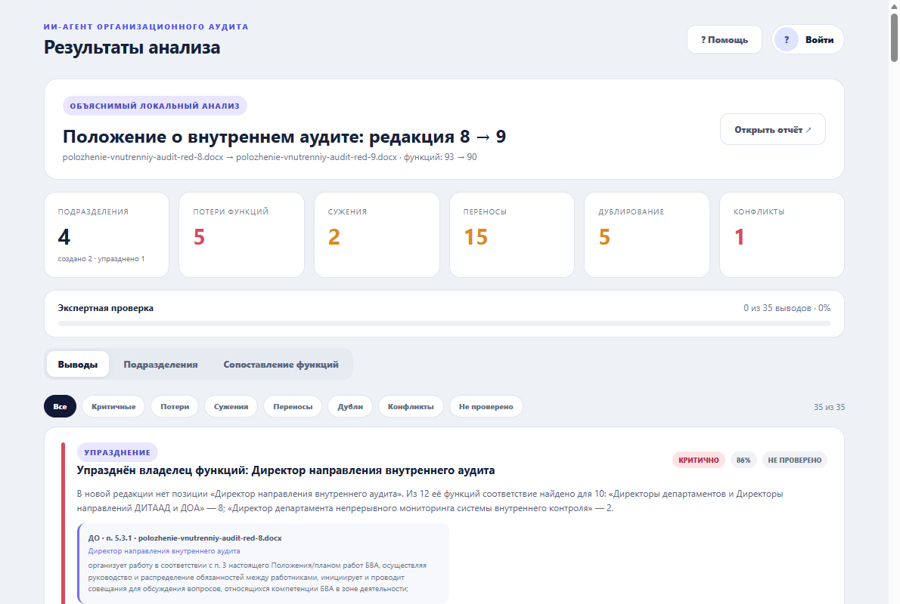
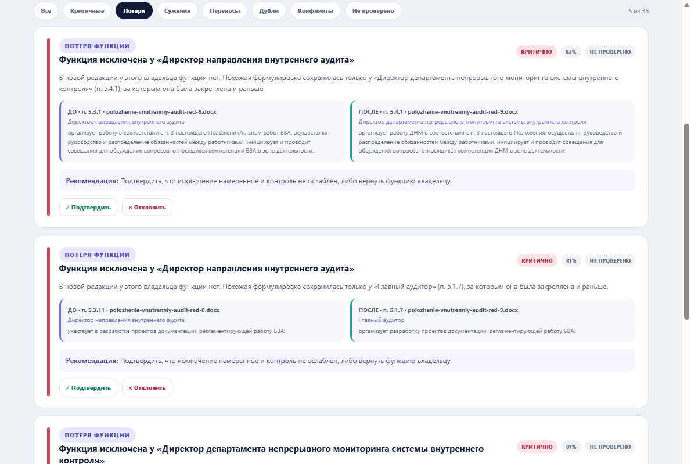
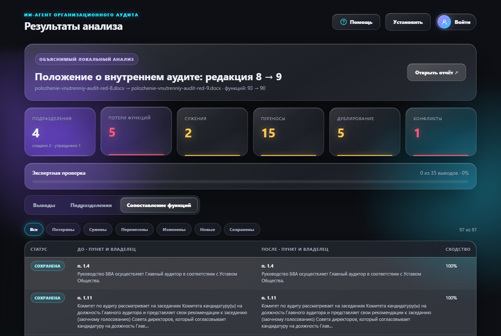

HackAlem AI · спец-трек Казахтелеком · кейс «Анализ оргструктуры»
БАТЫС AI
ИИ-агент сверяет положения и оргструктуры до и после реорганизации и показывает, какие функции потерялись, сузились, задвоились или ушли другому владельцу. Каждый вывод подтверждён номером пункта и цитатой.
решает эксперт — агент только показывает, где смотреть
Что болит
Положение на 85 тысяч знаков сверяют глазами
При реорганизации сотрудник вручную сопоставляет редакции положений, оргструктуры и приказы. Функция может исчезнуть, задвоиться или тихо потерять «ежеквартально» — и этого никто не заметит до первой проверки.
за функцию больше никто не отвечает
функция осталась, но без периодичности или объёма
два подразделения делают одно и то же
одна контрольная функция у двух владельцев
Кто работает и где что живёт
Один сервер, два клиента, одна база
Путь одного анализа
От двух комплектов до подписанного заключения
Проверка на контрольном комплекте · редакция 8 → 9
Что агент нашёл в положении о внутреннем аудите
- созданоДИТААД и ДОА — два новых департамента. п. 3.4, ред. 9
- упраздненоДолжность «Директор направления внутреннего аудита»: 10 из 12 её функций нашли новых владельцев. п. 5.3, ред. 8
- потеряУ ДККМ исчезли анализ результатов непрерывного аудита и предложения в план работ. Похожий текст остался только у ДНМ, у которого эти функции были и раньше. п. 5.5.4, 5.5.10, ред. 8
- сужениеОтчёты ДККМ больше не «ежеквартальные и по итогам года» — периодичность пропала. п. 5.5.5 → 5.5.3
- рекомендацияВернуть функции 5.5.4 и 5.5.10 ДККМ — подразделение сохранилось в новой структуре.
все эти находки закреплены автотестом — агент не может «забыть» их молча
Сверка с техническим заданием
Обязательное закрыто, необязательное — частично
- Реорганизованные, сохранённые и созданные подразделениявкладка «Подразделения»
- Сопоставление функционала и потери функцийтаблица «пункт ДО ↔ пункт ПОСЛЕ»
- Дублирование и конфликт интересовтиповые обязанности руководителей отфильтрованы
- Источник у каждого вывода: документ и пунктпроверяется тестом по всем выводам
- Итоговое аналитическое заключениепечать и PDF, с подписями экспертов
- Рекомендации по перераспределению функцийнеобязательный пункт 3 — кому отдать функцию и почему
- Сверка с законодательством и стандартаминеобязательно · нормативы организатором не выданы
- Сравнение со структурами других операторовнеобязательно · нет открытых данных
Как это выглядит
Веб-версия и телефон



Запуск
Одна команда, один клик
git clone https://github.com/BAITC-Hacks/hack-032ef148-team.git cd hack-032ef148-team docker compose up --build # без Docker: npm install && npm start
Откройте http://localhost:4180 и нажмите «▶ Положение о внутреннем аудите: редакция 8 → 9». С телефона — адрес и QR-код в разделе «Помощь».
Стек
Всё на одном языке
- СерверNode.js, Express 5, JWT, helmet
- Документыmammoth, pdf-parse, ExcelJS
- AIагент с инструментами · OpenAI или NVIDIA
- БазаPostgreSQL 16 или память
- Клиентывеб и PWA · Expo (iOS, Android)
- ЗапускDocker Compose · 11 автотестов